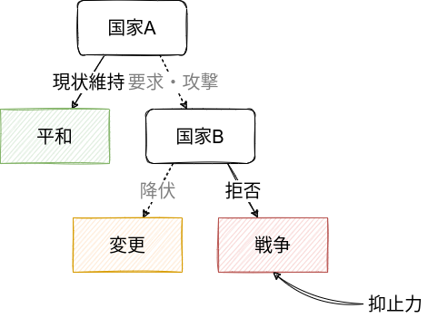
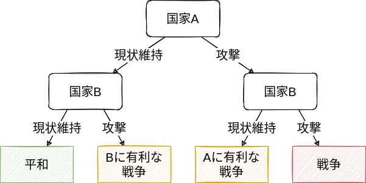

{kind=link}

戦争の原因
政治学入門
導入
- 戦争と外交はどのような関係にあるのか？
- なぜ戦争は選択されるのか？
戦争の原因？
- 人間の本性
- 循環論法、後知恵
- アナーキー
- 犯罪、内戦
- 政治的統合？
地域的・時間的な分散／非現実的な安全保障政策
- 戦争\(\neq\)自然災害／戦争\(=\)人々（集団）の選択
課題文献
- 抑止と安心供与
- 中西, 石田, と 田所 (2013, 第3章)
- 戦争の交渉モデル1
- 多湖 (2020, 第2章)
- 砂原, 稗田, と 多湖 (2020, 第10章)
- 坂本 と 石橋 (2020, 第2章)
- 大芝 ほか (2018, 第4章)
- 浅古 (2018, 第11章)
- 岡田 (2020, 第6章)
- 石黒 (2019, 第1章)
1 上から順に易しいものから専門的なものに並べている。
1 戦争の構造
様々な戦争に共通する構造？
- あらゆる戦争はあらゆる側面で異なる
1.1 政治の手段としての戦争
カール・フォン・クラウゼヴィッツ（「戦争論」）の戦争の定義(Clausewitz 2020)
戦争とは他の⼿段をもってする政治の継続である。
戦争とは、敵を強制してわれわれの意志を遂⾏させるために⽤いられる暴⼒⾏為である。
- 戦争\(\neq\)目的／戦争\(=\)手段
\(\leadsto\)「なぜ戦争が起こるのか」＝「なぜ外交が失敗したのか」(Fearon 1995)
複数の国＆利害対立\(\leadsto\)政治
- 国益 (national interest)：安全保障、国力、経済的富、領土、政策（政府）

- 現状変更勢力 (revisionist power)／現状維持勢力 (status quo power)
国際危機のシナリオ
- 国家\(A\)と国家\(B\)は価値のあるもの（例えば領土）をそれぞれ\(q\)と\(1-q\)と分け合っている。
- 国家\(A\)が\(B\)を攻撃し、\(B\)が降伏すれば、価値あるものの一部を明け渡す。
- 国家\(A\)は\(x\)を所有する（国家\(B\)は\(1-x\)だけ手にする）。
- 国家\(A\)が攻撃して、国家\(B\)が反撃をした場合、戦争が起こる。
- 戦争の結果国家\(A\)と\(B\)はそれぞれ\(w\)と\(1-w\)を獲得する。
- 戦争の費用としてそれぞれ\(c_A\)と\(c_B\)だけ失う。
- 展開型ゲーム (extensive-form game)／後ろ向き帰納法 (backward induction)
1.2 抑止
抑止 (deterrence) ：実行したいこと（この場合、攻撃）を自制させる

1.2.1 抑止の破綻・戦争の回避
- \(B\)：戦争より譲歩 (\(1-x > 1-w-c_B\))
- 例：\(q = 0.2, x = 0.8, w = 0.5, c_B = 0.4\)
1.2.2 抑止の成功
- \(B\)：譲歩より戦争 (\(1-x < 1-w-c_B\))
- \(A\)：戦争より平和 (\(q > w - c_A\))
- 例：\(q = 0.2, x = 0.8, w = 0.5, c_A = 0.4, c_B = 0.2\)
1.2.3 抑止の破綻・戦争
- \(B\)：譲歩より戦争 (\(1-x < 1-w-c_B\))
- \(A\)：平和より戦争 (\(q < w - c_A\))
- 例：\(q = 0.2, x = 0.8, w = 0.5, c_A = 0.2, c_B = 0.2\)
1.2.4 抑止の条件

- 国家\(B\)の反撃の意思 (\(w + c_B < x\))
- 国家\(A\)の戦争回避の意思 (\(q > w - c_A\))
- 戦争で有利な結果を得られる国力
- 戦争で受ける被害・受忍限度（意思の強さ）
1.3 交渉

交渉可能性(Fearon 1995)
基本的に、戦争に費用がある限り、互いに戦争よりも好ましい交渉結果を得ることができる。


- \(A\)が戦争よりも交渉を好む (\(x > w - c_A\))
- \(B\)が戦争よりも交渉を好む (\(1- x > 1-w - c_B\))
\[ w - c_A < x < w + c_B \]
- 外部機会 (outside option) \(\leadsto\)交渉ポジション（有利さ）
抑止＆交渉\(\leadsto\)アナーキーにおける平和
- 抑止と交渉の二分法
- 平和／正義
2 戦争の原因
そうであるにもかかわらず戦争が選択されるのはなぜか？(Fearon 1995)
- 情報の非対称性
- コミットメント問題
- 分割不可能性（リスク愛好的、楽観的）
2.1 情報の非対称性
情報の非対称性 (asymmetric information)
- 本当に国家\(B\)は反撃する気があるのか？
国家\(A\)が抑止の信憑性 (credibility) が低いと誤認 (misperception)\(\leadsto\)抑止や交渉の失敗\(\leadsto\)戦争
2.1.1 チープトーク
チープ・トーク、ブラフ
- 異なるタイプ\(\leadsto\)異なるメッセージ\(\leadsto\)情報伝達
コストリー・シグナル
2.1.2 朝鮮戦争
アチソン・ライン（1950年）
- 誤った情報伝達
北朝鮮が韓国に侵攻（朝鮮戦争）\(\leadsto\) アメリカが参戦、「北進統一」を目指す\(\leadsto\)中国義勇兵の参戦
- 中国による威嚇
2.1.3 干ばつと紛争
干ばつ\(\leadsto\)農作物の減少・経済水準の低下\(\leadsto\)戦争の費用の低下\(\leadsto\)誤認の確率の上昇？

- 相関\(\neq\)因果
- 第三の要因（交絡因子）
2.2 コミットメント問題
コミットメント問題 (commitment problem)
2.2.1 安心供与
第一撃における優位 (first-strike advantage) ／先制攻撃 (preemptive attack)(Powell 2006)
- 攻撃・防御バランス

戦争の結果
- 互いに攻撃する戦争の場合\(w\)
- 国家\(A\)に有利な戦争の場合\(w^A\)
- 国家\(B\)に有利な戦争の場合\(w^B\)
安心供与 (reassurance) の破綻
- \(B\)：平和より一方的な攻撃\(1-q < 1-w^B - c_B\)
- \(B\)：一方的に攻撃されるより戦争\(1-w^A-c_B < 1-w-c_B\)
- \(A\)：一方的に攻撃されるより戦争\(w^B-c_A < w-c_A\)
- 例：\(q = 0.5, w^A = 0.8, w = 0.5, w^B = 0.2, c_A = c_B = 0.2\)
\(\leadsto\)抑止＆安心供与
2.2.2 太平洋戦争
予防戦争 (preventive war)
- 大日本帝国は日中戦争で消耗\(\leadsto\)資源を求めて東南アジアに進出\(\leadsto\)アメリカなどから経済制裁
- アメリカは当時、日本にとって石油輸出国
2.3 交渉の失敗
情報の非対称性／コミットメント問題
3 戦争の終結
戦争の終結\(=\)外交の成功\(=\)外交の阻害要因の消滅
- データを用いた分析(Weisiger 2016)

- 回帰分析 (regression analysis)
- 統計的有意 (statistically significant)
参考文献
Clausewitz, Carl von. 2020. 戦争論 : 縮訳版. 日経BP日本経済新聞出版本部.
Fearon, James D. 1995. 「Rationalist explanations for war」. International organization 49 (3): 379–414.
Koubi, Vally. 2019. 「Climate change and conflict」. Annual Review of Political Science 22: 343–60.
Powell, Robert. 2006. 「War as a commitment problem」. International organization 60 (1): 169–203.
Weisiger, Alex. 2016. 「Learning from the battlefield: Information, domestic politics, and interstate war duration」. International Organization 70 (2): 347–75.
中西寛, 石田淳, と 田所昌幸. 2013. 国際政治学. 有斐閣.
坂本治也, と 石橋章市朗. 2020. ポリティカル・サイエンス入門. 法律文化社.
多湖淳. 2020. 戦争とは何か : 国際政治学の挑戦. 中公新書. 中央公論新社.
大芝亮, 秋山信将, 大林一広, と 山田敦. 2018. パワーから読み解くグローバル・ガバナンス論. 有斐閣ブックス. 有斐閣.
岡田章. 2020. 国際関係から学ぶゲーム理論 : 国際協力を実現するために. 有斐閣.
浅古泰史. 2018. ゲーム理論で考える政治学 : フォーマルモデル入門. 有斐閣.
石黒馨. 2019. グローバル政治経済のパズル : ゲーム理論で読み解く. 勁草書房.
砂原庸介, 稗田健志, と 多湖淳. 2020. 政治学の第一歩. 新版. 有斐閣.